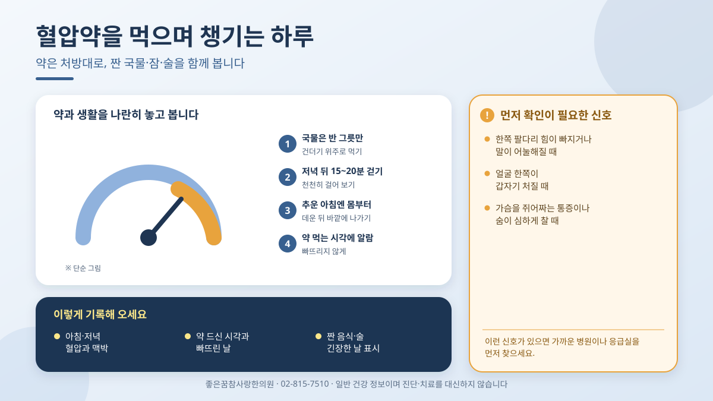

이종호 한의사 감수좋은꿈참사랑한의원 대표원장 (한의사 면허번호 19769)발행 2026-11-26 · 수정 2026-11-26
이 글의 차례
아침 식탁 한쪽에 작은 약통이 놓여 있습니다. 물 한 모금과 함께 혈압약을 삼키고, 출근 준비를 하다 문득 생각합니다. '이 약을 평생 먹어야 하는 걸까. 약 말고 내가 할 수 있는 건 없을까.' 진료실에서 이 질문을 참 자주 듣습니다.
혈압약을 드시는 분들의 마음은 대개 두 갈래입니다. 약을 먹고 있으니 생활은 크게 신경 쓰지 않아도 된다고 여기는 쪽, 그리고 약에만 기대는 것이 불안해서 뭐라도 더 해 보고 싶은 쪽입니다. 저는 두 분 모두에게 같은 말씀을 드립니다. 약은 약대로 이어 가고, 생활은 생활대로 살피자고요.
혈압은 하루에도 수십 번 오르내리는 숫자입니다. 잠을 설친 날, 짠 국물을 많이 먹은 날, 회의에서 크게 긴장한 날에는 같은 약을 먹어도 숫자가 다르게 나옵니다. 약이 기본 높이를 잡아 준다면, 생활은 그 위에서 출렁이는 폭을 정합니다.
그래서 진료실에서는 약 이름보다 먼저 요즘 하루가 어떻게 흘러가는지를 여쭙니다. 잠은 몇 시에 드시는지, 저녁은 무엇으로 드시는지, 걷는 시간은 있는지, 마음이 쫓기는 일은 없는지요. 그 대답 안에 혈압 숫자를 흔드는 이유가 숨어 있는 경우가 많습니다.
혈압약은 어떤 일을 하나요
혈압약은 종류에 따라 하는 일이 조금씩 다릅니다. 혈관을 조이는 신호를 누그러뜨리는 약, 몸속 물과 소금을 소변으로 내보내는 약, 심장이 뛰는 힘과 속도를 조절하는 약 등이 있고, 한 가지만 쓰기도 하고 두세 가지를 함께 쓰기도 합니다.
어떤 약을 드시는지에 따라 생활에서 신경 쓸 부분도 달라집니다. 소변을 늘리는 약을 드신다면 물을 너무 적게 드시지 않는지, 맥을 느리게 하는 약을 드신다면 계단에서 숨이 유난히 차지 않는지를 함께 봅니다. 그래서 약 이름을 정확히 아는 것이 출발점입니다.
약을 먹고 혈압이 잘 맞춰졌다고 해서 약이 필요 없어졌다는 뜻은 아닙니다. 약이 제 일을 하고 있어서 숫자가 맞는 것일 수 있습니다. 숫자가 좋아졌다고 혼자 약을 줄이거나 끊으면 혈압이 다시 오를 수 있으니, 이 결정은 꼭 처방한 선생님과 함께 하셔야 합니다.
왜 약을 먹어도 혈압이 출렁일까요
혈압약을 꼬박꼬박 드시는데도 어떤 날은 숫자가 높게 나와 걱정하시는 분이 많습니다. 대부분은 약이 갑자기 듣지 않게 된 것이 아니라, 그날의 생활이 숫자를 밀어 올린 경우입니다. 무엇이 숫자를 흔드는지 알면 덜 불안해지실 수 있습니다.
- 잠을 설치거나 새벽에 여러 번 깬 날
- 전날 저녁 국물, 젓갈, 라면처럼 짠 음식을 많이 드신 날
- 술을 드신 다음 날 아침
- 바쁜 일정이나 갈등으로 마음이 쫓긴 날
- 추운 아침에 따뜻한 이불에서 바로 나와 잰 경우
- 진통제나 감기약을 여러 날 드신 경우
이 가운데 진통제와 감기약은 놓치기 쉽습니다. 일부 소염진통제나 코막힘 약은 혈압에 영향을 줄 수 있어서, 혈압약을 드시는 분은 약국에서 약을 사실 때 혈압약을 드신다고 말씀하시는 것이 좋습니다.
진료실 혈압과 집 혈압은 다를 수 있습니다
병원에만 가면 혈압이 높게 나오는 분이 계십니다. 흰 가운 앞에서 긴장해서 그렇다고 해서 흔히 백의 고혈압이라고 부릅니다. 반대로 진료실에서는 괜찮은데 집이나 직장에서 오히려 높게 나오는 분도 계십니다. 그래서 집에서 잰 기록이 무척 중요합니다.
집에서 잴 때는 아침에 일어나 화장실을 다녀온 뒤, 약을 먹기 전에 등을 기대고 앉아 1~2분 쉬고 잽니다. 저녁에도 잠들기 전 같은 방법으로 잽니다. 팔에 맞는 크기의 커프를 쓰고, 팔은 심장 높이에 두며, 재는 동안에는 말을 하지 않습니다.
숫자 하나하나에 마음을 쓰기보다 일주일 평균을 보시길 권합니다. 하루 높게 나온 숫자보다, 일주일 동안 아침 숫자가 어떤 흐름을 보이는지가 처방한 선생님께도 저에게도 훨씬 쓸모 있는 정보가 됩니다.
약과 함께 볼 때 헷갈리기 쉬운 불편
혈압약을 드시면서 새로 생긴 불편이 약 때문인지, 혈압 때문인지, 다른 이유 때문인지 헷갈리실 때가 있습니다. 일어설 때 핑 도는 느낌, 마른기침, 발목 붓기, 잦은 소변, 피로감 같은 것들이 흔히 말씀하시는 불편입니다.
이런 불편이 생겼을 때 가장 먼저 하실 일은 처방한 선생님께 알리는 것입니다. 약을 바꾸거나 용량을 맞추면 해결되는 경우도 있기 때문입니다. 한의원에서는 그 과정과 별개로 잠, 소화, 손발의 온도, 붓기처럼 몸 전체의 흐름을 함께 들여다봅니다.
일어설 때 어지러운 느낌은 특히 신경 써서 여쭙니다. 혈압이 너무 낮아진 것일 수도 있고, 물을 적게 드셨거나 오래 누워 계시다가 갑자기 일어나서일 수도 있습니다. 앉았다 일어날 때는 잠시 걸터앉아 숨을 고른 뒤 천천히 일어서는 습관만으로도 도움이 될 수 있습니다.
혈압약을 드시는 분들이 자주 헷갈리는 것
첫째, 약을 먹으면 생활은 상관없다는 생각입니다. 약은 혈압의 기본 높이를 잡아 주지만, 짠 식사와 짧은 잠, 잦은 술이 이어지면 같은 약으로도 숫자가 잘 맞지 않을 수 있습니다. 그러면 약의 개수나 용량이 늘어나는 쪽으로 흘러가기도 합니다.
둘째, 컨디션이 좋은 날은 약을 건너뛰어도 된다는 생각입니다. 혈압이 높아도 대부분은 아무 느낌이 없습니다. 머리가 아프지 않다고 혈압이 괜찮은 것이 아니고, 몸이 가볍다고 약이 필요 없는 것도 아닙니다. 약은 느낌이 아니라 시각에 맞춰 드시는 것이 좋습니다.
셋째, 혈압약은 한번 시작하면 절대 바꿀 수 없다는 생각입니다. 실제로는 나이, 계절, 체중, 생활 습관에 따라 처방한 선생님이 종류나 용량을 조정하는 경우가 있습니다. 그 판단에 가장 큰 도움이 되는 것이 집에서 꾸준히 적은 혈압 기록입니다.
계절과 나이에 따라 달라지는 숫자
겨울에는 찬 공기에 혈관이 움츠러들어 아침 혈압이 높게 나오기 쉽고, 여름에는 땀으로 물이 빠져 오히려 낮게 나오거나 일어설 때 어지러운 분이 많습니다. 같은 약을 드셔도 계절에 따라 숫자의 흐름이 달라질 수 있다는 것을 알아 두시면 덜 놀라십니다.
연세가 드시면 혈관이 단단해지면서 위쪽 숫자가 오르기 쉽고, 잠이 얕아지며 새벽 혈압이 흔들리기도 합니다. 그래서 어르신은 숫자를 너무 낮추는 것보다 어지럼이나 넘어짐 없이 하루를 편안하게 지내시는지를 함께 봅니다. 이 기준 역시 처방한 선생님과 상의해 정하시면 됩니다.
환절기에는 감기약이나 진통제를 드실 일이 많아지고, 연말에는 모임과 술자리가 늘어납니다. 이런 시기에는 평소보다 하루 한 번 더 혈압을 재 보시고, 숫자가 이어서 높게 나오면 기록을 들고 처방한 병원에 문의해 보세요.
먼저 이렇게 여쭙니다
처음 오시면 저는 대략 이런 순서로 여쭙니다. 미리 생각해 오시면 이야기가 훨씬 수월해집니다.
- 혈압약을 언제부터, 어떤 이름으로, 하루 몇 번 드시나요?
- 집에서 혈압을 재고 계신가요? 아침과 저녁 숫자는 어느 정도인가요?
- 잠드는 시각과 깨는 시각, 밤에 깨는 횟수는 어떠신가요?
- 국물이나 짠 반찬, 외식은 일주일에 얼마나 드시나요?
- 술, 담배, 커피는 어느 정도 하시나요?
- 혈압약 말고 함께 드시는 약이나 영양제가 있나요?
모든 질문에 정확히 답하지 못하셔도 괜찮습니다. 약 봉투와 최근 일주일 혈압 기록만 있어도 이야기의 절반은 시작된 셈입니다.
가족 가운데 혈압이나 심장, 뇌혈관 질환을 앓으신 분이 있는지도 함께 여쭙니다. 가족력이 있다고 해서 같은 길을 걷는다는 뜻은 아니지만, 정기 검진 주기와 생활에서 조금 더 신경 쓸 부분을 정할 때 참고가 됩니다. 최근 받으신 건강검진 결과지가 있다면 함께 가져와 주세요.
일상에서 먼저 해 볼 수 있는 것
생활 관리라고 하면 거창하게 들리지만, 혈압을 흔드는 요인 하나를 골라 작게 바꾸는 것부터 시작하시면 됩니다. 한꺼번에 여러 가지를 바꾸려 하면 오래가지 못하는 경우가 많습니다.
- 국물은 건더기 위주로 드시고, 국물은 반 그릇만 남기기
- 저녁 식사 뒤 15~20분 천천히 걷기
- 잠드는 시각을 일정하게 맞추고, 잠들기 전 휴대폰 보는 시간 줄이기
- 술은 마시는 날의 횟수부터 줄이기
- 추운 아침에는 일어나서 바로 찬 바깥에 나가지 말고 몸을 먼저 데우기
- 약 먹는 시각을 정해 알람을 맞춰 두기
짠맛은 갑자기 끊기보다 조금씩 줄이는 쪽이 오래갑니다. 혀가 덜 짠 맛에 익숙해지는 데 몇 주가 걸리니, 처음 일주일이 심심하게 느껴지셔도 조금만 버텨 보세요.
움직임은 숨이 약간 차되 옆 사람과 이야기할 수 있을 정도가 적당합니다. 갑자기 무거운 것을 들거나 숨을 참고 힘을 주는 운동은 혈압을 순간적으로 크게 올릴 수 있으니, 근력 운동을 하실 때는 숨을 내쉬면서 힘을 주시길 권합니다.
마음의 긴장도 혈압과 가깝습니다. 하루 종일 쫓기듯 지내다 보면 어깨가 귀 쪽으로 올라가고 숨이 얕아집니다. 잠들기 전 5분 정도 등을 대고 누워 숨을 길게 내쉬는 시간을 만들어 보세요. 내쉬는 숨을 들이쉬는 숨보다 조금 길게 하는 것만으로도 몸이 한결 느슨해지는 것을 느끼실 수 있습니다.
체중이 조금 늘어난 분이라면 허리둘레를 함께 보시길 권합니다. 몸무게 숫자보다 허리둘레가 줄어드는 흐름이 혈압 기록과 나란히 움직이는 경우가 많습니다. 한 달에 한 번, 같은 시각에 배꼽 높이에서 재어 적어 두시면 됩니다.
한의원에서 함께 살필 수 있는 경우
- 혈압약을 드시면서 잠이 얕고 자주 깨는 경우
- 긴장하거나 화가 나면 얼굴로 열이 오르고 뒷목이 뻣뻣해지는 경우
- 혈압은 맞춰졌지만 늘 피곤하고 손발이 무거운 경우
- 저녁이면 발목이 붓고 다리가 무거운 경우
- 뒷목과 어깨가 굳어 머리가 무겁게 느껴지는 경우
좋은꿈참사랑한의원에 오시면 먼저 아래 '먼저 확인이 필요한' 신호가 없는지부터 봅니다. 그다음 맥을 짚고 혈압을 함께 재며, 잠과 소화, 대소변, 손발 온도를 여쭙습니다. 뒷목과 어깨가 굳어 있다면 직접 만져 보며 어느 자리가 불편한지 확인합니다.
진찰한 내용을 바탕으로 생활에서 바꿔 볼 것 하나와 함께 침, 온열 관리, 한약 상담 가운데 지금 상태에 맞는 것을 정합니다. 한약을 상의할 때는 드시는 혈압약과 다른 약을 모두 확인하고 신중하게 정합니다. 혈압약은 처방한 선생님과 상의 없이 멈추지 않습니다.
한의원 진료는 내과 진료를 대신하는 것이 아니라 나란히 가는 것입니다. 내과에서 약과 정기 검사를 챙기고, 한의원에서는 그 사이의 잠과 긴장, 몸의 무거움을 함께 살핀다고 생각해 주시면 됩니다.
이렇게 기록해 오시면 상담이 쉬워집니다
혈압은 진료실에서 한 번 잰 숫자보다 집에서 쌓은 기록이 훨씬 많은 것을 알려 줍니다. 2주 정도만 간단히 적어 보세요.
- 아침과 저녁 혈압, 맥박
- 약 드신 시각과 빠뜨린 날
- 잠든 시각과 깬 시각, 밤에 깬 횟수
- 짠 음식이나 술을 드신 날 표시
- 긴장했거나 바빴던 날 표시
- 어지럼, 두통, 붓기처럼 새로 생긴 불편
빠진 날이 있어도 괜찮습니다. 기록을 나란히 놓고 보면 숫자가 높았던 날과 생활 사이의 연결이 보이기 시작하고, 그것이 다음 걸음을 정하는 실마리가 됩니다.
오래 함께 가는 혈압을 위해
혈압약을 먹는다는 것은 내 몸이 조금 더 보살핌이 필요하다는 신호이지, 실패했다는 뜻이 아닙니다. 약을 챙겨 드시는 것만으로도 이미 중요한 일을 하고 계신 겁니다.
그 위에 생활 하나를 더하면 됩니다. 국물 반 그릇, 저녁 산책 15분, 일정한 잠 시각. 이번 주에는 이 가운데 하나만 골라 보세요. 다음에 오시면 일주일 동안의 아침 혈압 기록부터 함께 펼쳐 보겠습니다.
이런 증상은 먼저 확인이 필요합니다
- 갑자기 한쪽 팔다리에 힘이 빠지거나 말이 어눌해지고 얼굴 한쪽이 처지는 경우
- 가슴을 쥐어짜는 듯한 통증이나 숨이 심하게 차고 혈압이 평소보다 크게 높은 경우
이런 신호가 있으면 한의원보다 가까운 병원이나 응급실을 먼저 찾으세요.
함께 읽으면 좋은 글
- 고혈압 진단을 받았거나 경계라는 말을 들었다면 생활에서 무엇부터 살피나요?
- 혈압약이나 당뇨약을 먹고 있는데 한약을 함께 먹어도 되는지 어떻게 확인하나요?
- 추운 아침마다 혈압이 높게 나올 때 집에서는 어떻게 재고 기록하나요?
- 짠 음식과 국물을 좋아하는 습관은 혈압과 어떤 관련이 있나요?
- 앉았다 일어설 때 어지러운 것은 어떤 점을 살펴보나요?

여쭙는 것
- 혈압약을 언제부터, 어떤 이름으로, 하루 몇 번 드시나요?
- 집에서 혈압을 재고 계신가요? 아침과 저녁 숫자는 어느 정도인가요?
- 잠드는 시각과 깨는 시각, 밤에 깨는 횟수는 어떠신가요?
생활에서 해 볼 것
- 국물은 건더기 위주로 드시고, 국물은 반 그릇만 남기기
- 저녁 식사 뒤 15~20분 천천히 걷기
- 잠드는 시각을 일정하게 맞추고, 잠들기 전 휴대폰 보는 시간 줄이기
한의원에서 함께 살필 것
- 혈압약을 드시면서 잠이 얕고 자주 깨는 경우
- 긴장하거나 화가 나면 얼굴로 열이 오르고 뒷목이 뻣뻣해지는 경우
- 혈압은 맞춰졌지만 늘 피곤하고 손발이 무거운 경우
먼저 확인이 필요한 신호
- 갑자기 한쪽 팔다리에 힘이 빠지거나 말이 어눌해지고 얼굴 한쪽이 처지는 경우
- 가슴을 쥐어짜는 듯한 통증이나 숨이 심하게 차고 혈압이 평소보다 크게 높은 경우
한눈에 보는 표
| 구분 | 핵심 |
|---|---|
| 여쭙는 것 | 혈압약을 언제부터, 어떤 이름으로, 하루 몇 번 드시나요? 집에서 혈압을 재고 계신가요? 아침과 저녁 숫자는 어느 정도인가요? |
| 생활에서 해 볼 것 | 국물은 건더기 위주로 드시고, 국물은 반 그릇만 남기기 저녁 식사 뒤 15~20분 천천히 걷기 |
| 한의원에서 함께 살필 것 | 혈압약을 드시면서 잠이 얕고 자주 깨는 경우 긴장하거나 화가 나면 얼굴로 열이 오르고 뒷목이 뻣뻣해지는 경우 |
| 먼저 확인이 필요한 신호 | 갑자기 한쪽 팔다리에 힘이 빠지거나 말이 어눌해지고 얼굴 한쪽이 처지는 경우 가슴을 쥐어짜는 듯한 통증이나 숨이 심하게 차고 혈압이 평소보다 크게 높은 경우 |
자주 묻는 질문
혈압이 정상으로 나오면 약을 끊어도 되나요?
약을 드셔서 숫자가 맞춰진 것일 수 있어서 혼자 끊으시면 혈압이 다시 오를 수 있습니다. 약을 줄이거나 멈추는 일은 처방한 선생님과 상의해서 정하셔야 합니다.
혈압약을 먹고 있는데 침 치료를 받아도 되나요?
드시는 약을 알려 주시면 그에 맞춰 진료 방향을 정합니다. 특히 피를 묽게 하는 약을 함께 드신다면 처음에 꼭 말씀해 주세요.
혈압약과 한약을 함께 먹어도 되나요?
드시는 약을 모두 확인하고 신중하게 정합니다. 약 봉투나 처방전 사진을 가져와 주시면 함께 살펴보고, 필요하면 처방한 선생님과 상의하시도록 안내합니다.
집에서 혈압은 하루에 몇 번 재면 되나요?
보통 아침에 일어나 약 먹기 전과 저녁 잠들기 전, 하루 두 번을 권합니다. 앉아서 1~2분 쉰 뒤 같은 팔로 재고, 숫자 하나보다 일주일 평균을 보시는 것이 좋습니다.
혈압약 때문에 어지러운 것 같으면 어떻게 하나요?
처방한 선생님께 먼저 알려 주세요. 약 조정으로 해결되는 경우가 있습니다. 한의원에서는 물 섭취, 일어서는 습관, 잠처럼 함께 살필 수 있는 부분을 확인합니다.
좋은꿈참사랑한의원은 재진 때 지난번 이야기부터 이어서 여쭙니다. 진료시간과 예약은 오시는 길에서 확인하세요.
어디서 상담받을 수 있나요?
좋은꿈참사랑한의원은 서울 동작구 만양로2길 2 신성빌딩 3층·5층(서울 동작구 상도동, 7호선 상도역 3번 출구 근처)에 있습니다. 한의사 3명(이종호 대표원장, 조영기 수석진료원장, 정원영 진료원장)이 진료합니다. 진료시간은 평일 09:30~20:00(점심 13:00~14:00), 토·일·공휴일 09:30~15:00이며, 방문 전 전화로 확인을 권합니다. 예약은 네이버 예약, 카카오톡 상담, 전화 02-815-7510로 받습니다.
이 글은 일반적인 건강 정보이며 개인의 진단이나 치료를 대신하지 않습니다. 증상이 있거나 복용 중인 약이 있다면 진료를 통해 확인하세요. 치료 효과는 개인마다 다를 수 있습니다.
작성 기준: 일반적으로 알려져 있는 건강 정보를 참고해 정리했습니다(대표원장 감수). 증상 기록은 1~2주 동안 하루 1회, 비슷한 시간에 적어 오시면 지난 상태와 비교하기 쉽습니다.